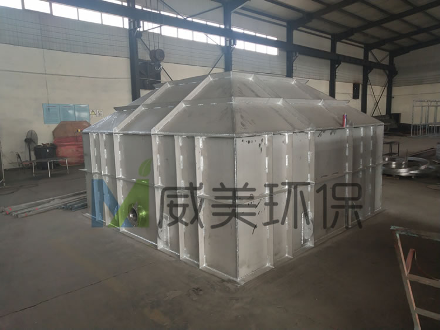
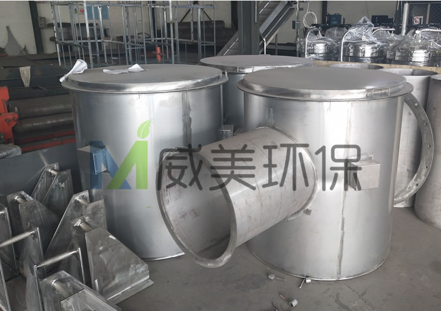
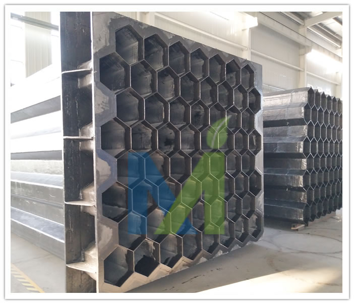
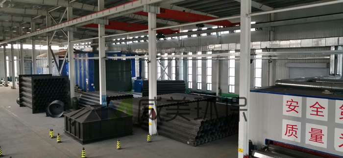
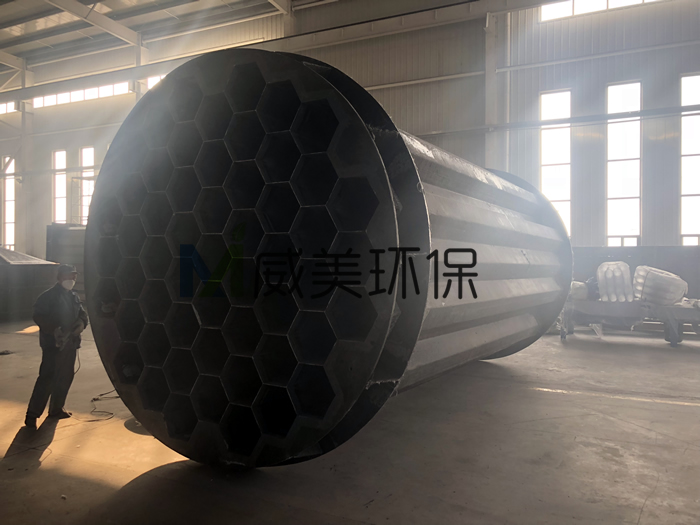
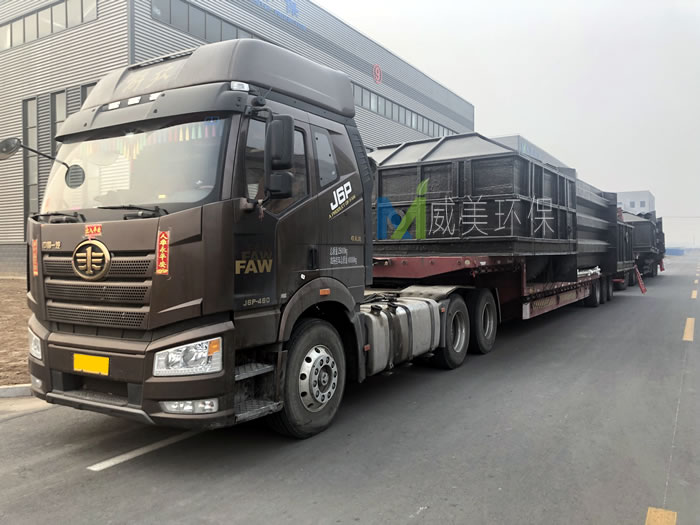

江西华邦复合材料有限公司专业从事电除雾器、湿式电除尘器及阳极管等除尘设备的研发生产
 13870005775
1387000577513870005775
邮箱：jiangxihb@163.com阳极管按材料分为：导电玻璃钢阳极管，不锈钢（304、316L、2205）阳极管；
玻璃钢阳极管结构形式为内切圆360mm正6边形，壁厚3mm，长度为：6000mm；
玻璃钢阳极管介绍:http://www.cnwesp.com/product/product89.html
不锈钢阳极管结构形式为内切圆360mm正6边形，壁厚1.5mm，长度为：6000mm；
不锈钢阳极管:http://www.cnwesp.com/product/product88.html
把多根阳极管组合，形成蜂窝状阳极管束作为湿电除尘器沉淀电极。组装并加强后，作为一个整体，与上下壳体连接，阳极管制作严格按国家相关以及行业标准要求执行，合格沉淀管内表面应平整顺滑；
玻璃钢阳极管内表面含有碳纤维及阻燃剂的耐磨阻燃导电层，壁厚均匀并且管端面和轴线成直角、无毛刺，外观无任何形式的缺陷，主要导电方式是通过碳纤维毡和水膜导电；。
玻璃钢阳极管采用新技术导电玻璃钢，为CFRP导电碳纤维强化复合材料，由玻璃纤维、石墨粉、树脂材料以及各种添加剂通过模压、缠绕、手糊成型、以及防紫外线 防老化等工艺制成。内表面平整光洁易冲洗，阻燃以及抗腐蚀性强，可以抗各种酸（硫酸、盐酸、氢氟酸等）和强碱的腐蚀。其导电性、机械强度、耐温性能以及抗老化性完全满足阳极材料的使用要求
由阳极管组成的管束构成湿电除尘器的阳极系统，下面，保定美田环保就详细叙述一下两种阳极管的材质及特点：
导电玻璃钢阳极管详细介绍
导电玻璃钢阳极管（沉淀电极）所用玻璃钢的层状结构从内到外依次为：１层碳纤维垫、２层短切纤维条状垫、３ 层0.4mm厚的玻纤布以及ｌ层玻璃表 面垫，树脂采用乙烯基树脂，其中含有高含碳量（＞９８％）石墨、阻燃剂等，这种材质的导电玻璃钢具有强度高、刚性好、导电性能好、阻燃等优点。
导电玻璃钢阳极管-蜂窝管束特点

不锈钢阳极管详细介绍
湿电除尘用导电不锈钢阳极管-合金钢阳极管，它具有导电性好、韧性高等特点，是目前国际上最经典的一种合金钢阳极管，不锈钢阳极管具有以下特点：
1、不锈钢阳极管具有安装方便，能确保每个模块相互连通，确保导电性能稳定。
2、不锈钢阳极管管壁内表面光滑平整，内壁冲洗清洁方便，无对使用性能有影响的龟裂、分层、针孔等不良现象；
3、不锈钢阳极管端面平整，不会出现管径和管长偏差，拉伸强度高，耐磨性强，防腐性能高，高温时不变形，使用寿命长，合金钢材料还可以二次回收利用。
4、不锈钢阳极管维护和清理都很方便。合金钢阳极管在组装生产工艺上采用全自动的焊接工艺，模块上部设双层合金钢法兰，中间用合金钢加筋板进行加强，保证焊接处永远不会脱落和击穿，法兰尺寸、厚度及筋的密度，严格按需方图纸要求设计生产制造。
不锈钢阳极管常用材质有SUS304、SUS316L、2205双相合金钢、254SMO超级奥氏体级不锈钢材料等。

江西华邦复合材料有限公司专业从事烟气深度治理设备的研发制造，产品主要有阳极管、电除雾器、湿式静电除尘器、脱硫除尘器等烟气净化设备。现在来讲讲电除雾器维护注意事项
(1)电除雾器收尘室
除尘装置中气体温度在露点以下会引起化学腐蚀，由于H20—H2SO4冷凝而引起绝缘物表面上漏电，或在电极线上黏附粉尘，或者生成绝缘性的覆盖膜，所以应该经常使气体温度保持在露点以上。另一方面也要注意在500℃以上的高温下， 由于构件的热应力而产生的故障。一般来说，希望在比含S02、SO3的混合气体的露点高50℃左右的温度下操作。
对于电除雾器，为防止效率降低，希望在40℃以下的条件下进行运转。

电除雾器收尘室
(2)电除雾器电源设备
为使电除雾器高效运转，希望经常加上尽可能高的电压。所以，对导电部分和大地的绝缘，支承物的构造，以及材料等应当予以特别注意。如有水分、粉尘附着在绝缘瓷瓶表面上，或混入电除雾器的绝缘油中，电气绝缘就会显著恶化，使有效电压降低。经过彻底清扫的绝缘瓷瓶用1000V兆欧计测量其绝缘电阻大致上是无限大，至少应以20Mn以上作为基准。绝缘瓷瓶应该根据使用状况、环境来决定其定期清扫周期。此外，应把绝缘瓷瓶放在箱内并送入热风以免受到湿气体和粉尘的影响。
晶闸管整流的场合，温度对其工作特性和寿命有影响，所以有必要注意晶闸管周围温度的上升情况。晶闸管整流器收藏在贮槽内，由于经常受绝缘油等的冷却，所以没有温度上升的问题，但是要注意吸湿呼吸器等的污染。如果吸湿呼吸器受到污染，水分等进入贮槽的绝缘油中，往往会引起绝缘恶化。

(3)电除雾器酸雾的排出
对电除雾器来说，捕集下来的酸雾是从室内下部向室外作为排放液逐渐排出。由于排放液中的金属化合物等会堵塞排出管，引起进气室内积酸而招致气体阻力增大，所以需要加以注意。
(4)电除雾器除雾室的清扫
除雾室长期运转后，除尘效率逐渐降低。所以必须在适当的时期打开清扫。定期清扫的周期根据矿的品种、焙烧炉形式、操作状态等决定。

(5)电除雾器放电电极（阴极线）的更换
电除雾器的放电电极由于粉尘的粘附、绝缘皮膜的形成以及腐蚀、安装质量不好而引起断线，或者由于不可能纠正的弯曲等原因需要予以更换。使用硫磺矿及锌矿时，放电电极往往有形成绝缘皮膜的现象。一般是1～5年全部更换一次。除雾装置放电电极更换的理由大致上也与除尘装置相同星型突出部分破损厉害时也需要更换。

(6)电除雾器绝缘瓷瓶
绝缘瓷瓶的破坏、龟裂是经常发生的，这会招致不能外加高电压或不能送电。其原因如下。
冷凝漏电：由于收尘室在运转中温度降低，水蒸气在表面上冷凝，往往发生漏电，所以必须在适当的温度下(出口300℃)运转。安装作业中的破坏：安装作业要谨慎，必须注意不要碰撞或安装不合适。
(7)电除雾器油封用绝缘油
电除雾器使用油封时，绝缘油直接与外面气体、炉气接触、所以尘埃、酸雾、水分等进入而使绝缘变得非常不好。由于液面放电或悬浮尘埃的电桥闪络而不能施加高的电压，进而还会发生火灾放电，并有可能发生火灾，所以应该尽量使用绝缘良好的绝缘油。另外，必须定期进行绝缘耐力试验及除去混入水分的作业。长期使用后的绝缘油由于绝缘能力恶化，1～2年需要更换再生一次。
湿电除尘用导电不锈钢阳极管，具有安装方便，能确保每个模块相互连通，确保导电性能稳定。管壁内表面光滑平整，内壁冲洗清洁方便，无对使用性能有影响的龟裂、分层、针孔等不良现象；不锈钢阳极管端面平整，不会出现管径和管长偏差，拉伸强度高，耐磨性强，防腐性能高，高温时不变形，使用寿命长，合金钢材料还可以二次回收利用。
不锈钢电除雾器适用领域
磷化工行业、燃煤电厂\锅炉烟气除尘、硫酸工业酸雾处理、转炉煤气烟尘除尘、钢铁行业高湿烟尘、有色金属冶炼除尘玻璃生产行业
316L不锈钢阳极管
316L不锈钢电除雾器壳体
316L不锈钢电除雾器集尘室

316L不锈钢电除雾器绝缘箱

文献：《砖 家》 2016年10月 总第26期 文章来源：西安市窑炉设备研究所 作者：邵三虎
GB29620-2013《砖瓦工业大气污染物排放标准》从2016年的7月1日起，开始实施表2 的限值。同时，国家在环保上加强了管理力度，很多地区对砖瓦企业要求必须严格执行标准。不能达标排放的企业就必须停产。现在许多砖瓦企业虽然都已经安装了湿式脱硫除尘装置，但基本都做不到达标排放。所以今年因环保不达标被迫停产的企业不少。本文对砖瓦企业隧道窑难以达标的原因作一些粗浅的分析，并提出一些可以达标的技术方案，供同行们探讨。
1、烟气中氧含量对检测结果的影响：
环境监测部门在砖厂检测时，需要检测烟气中的氧含量。氧含量的检测，是为了防止稀释排放的一种监测手段。因为燃料煤的燃烧，实际上是一个剧烈的氧化过程，空气在参与燃烧以后，理论上空气中的氧气会完全消耗掉。所以，如果检测出的氧含量高，说明烟气中掺入的干净空气多了。为了能够准确地反映烟气的实际净化情况，需要把这部分干净空气从检测结果中剔除。氧含量的检测和折算系数的设定就是为了排除稀释空气对烟气检测结果的影响而设置的。
理论上讲，窑炉内污染物的总量是燃料煤在燃烧后产生的以及原材料中的某些成分在经历物理化学反应后释放出来的，和掺入的过量空气没有关系。氧含量的检测和折算只是真实地反映了烟气的实际污染情况。只是剔除了稀释空气对检测结果的干扰和影响。折算后所得的结果是烟气污染的实际情况。如果掺入的过量空气多了（即氧含量高了），污染物的实测值会减小，掺入的过量空气少了（即氧含量低了），污染物的实测值就会变大。因为这部分污染物的总值是固定的，无论是氧含量高还是氧含量低，它折算后的最后结果应该是基本一致的。
所以，氧含量的检测及折算系数的确定，对由燃料煤燃烧以及坯体原材料物理化学反应所产生的污染物，会排除稀释空气的影响，得到一个准确的污染物数值。但由于砖瓦窑炉本身运转时过量空气系数大，氧含量高的特殊性，致使折算系数很大。对烟气中的那些不是由于燃料煤产生污染物，会把检测数值放大，使得部分污染物的检测数值受到影响。例如颗粒物和氟化物。
烟气中氧含量对检测结果的影响：1）、对完全由燃料煤产生的污染物影响较小或几乎没有影响，例如SO2，NOx。稀释空气的掺入对实测结果的影响不大。2）、对不完全是由燃料煤燃烧形成的污染物，例如颗粒物和氟化物，有较大的影响。
目前看，对烟尘颗粒物的影响最大。原因是烟气中的颗粒物不完全是由燃料煤燃烧产生的，砖瓦窑炉中还有其他原因也会产生颗粒物污染。这些污染物和燃料煤燃烧所形成的烟尘颗粒物一并被作为烟气的颗粒物被氧含量折算放大了。其次是氟化物，目前环保部门大多没有把它列为主要监测物，所以目前得到的实测数据较少。但可以肯定的是，氟化物不仅燃料煤中有，某些地区的黏土、页岩原料中及地下水中还含有较高的氟化物。还有一些地区是高氟水区，例如陕西关中的北部地区就是高氟水区。这些地区烟气中所检出的氟化物不仅含有燃料煤产生的氟化物，还有黏土原料产生的氟化物，这些地区的砖瓦窑炉氟化物如果进行氟化物检测肯定是超标的。
2、隧道窑所排烟气中为什么颗粒物难以达标：
难以达标的原因：1）、砖厂的脱硫除尘设备简陋，不能达到升级后的标准要求；2）、砖瓦窑炉中，颗粒物的污染源不仅仅是燃料煤，还有烧成过程及干燥过程都会产生新的颗粒物；3）这些非燃料煤产生的污染物被折算系数放大了。
1）、砖瓦企业因在烟气净化这个问题上处于刚刚起步阶段，加之整个行业对环保问题重视不足，导致砖厂的脱硫除尘设备大都比较简陋，配套不足，难以满足新标准的要求。
目前大多数砖厂安装的都是一个单级的湿法脱硫除尘装置，比较简陋。如果与电力行业或锅炉行业来比较的话，可以说是非常简陋。虽然说湿法脱硫除尘器兼有除尘、脱硫及脱氟三大功能，但应该指出的是，湿式脱硫除尘装置的除尘效果是有选择性的。对于粉碎设备等产生的粉尘，除尘效率较高，而对于燃料煤燃烧后产生的烟尘颗粒物，其除尘效率较低。据电厂及锅炉行业的研究结果，水膜除尘对于烟尘的脱除效率仅为50%左右，且对微米级的烟尘细颗粒物的脱除效率还不足20%。（参考文献1，2）。锅炉行业的烟气排放标准，颗粒物的限值是50mg/m3，基准氧含量是9%，比砖瓦行业的颗粒物限值30mg/m3,以及基准氧含量8.65%都要松一些。即使这样，锅炉行业仅使用湿法脱硫除尘一级尚不能满足达标的要求。那么砖瓦行业中仅用一级简陋的湿法除尘脱硫器如何能够达到目前的高标准呢？北方取暖区的同仁们都能看得到，冬季取暖用的燃煤锅炉大都采用的是一级布袋除尘和一级湿法脱硫的标准配置。电厂锅炉以及热力站锅炉的烟气处理系统则更为复杂。电力行业现在已经提出超净化排放和零排放的概念。为了消除烟气中的烟尘颗粒物，除了布袋除尘器，还有高压静电除尘器，电袋复合除尘器，湿式电收尘器等多种收尘手段及设备。当然还必须配有脱硝系统等。所以，砖瓦企业不要指望只用一台简易的湿式除尘脱硫器就能达到现行标准的要求，必须有提高脱硫尤其是除尘水平的打算，增加烟气净化系统的投资预算。2013年9月，砖瓦排放标准发布时，环保部新闻发言人就曾提出，砖瓦企业的环保投资应占到砖厂总投资的12%左右（参考文献3），而现在砖瓦企业中，有几个在环保方面的投资能达到总投资的12%呢？
2）、砖瓦企业中颗粒物污染源不仅是由燃料煤燃烧后产生的
因为砖瓦窑炉是以煤及煤矸石等为主要燃料的，所以标准中所列的污染物数值是以燃料煤燃烧后产生的污染物制定的。有很多砖瓦行业内的人士认为，烧结砖大多数采用内掺燃料的形式，燃料煤燃烧后的灰分及灰渣被红砖固定下来了，基本不会产生烟尘颗粒物。即使有一些颗粒物，也会在干燥室中被干燥过程中的砖坯所吸收。所以在烟气处理中，基本上都是以脱硫为主，认为颗粒物不会超标。这个认识是有一定道理的。因为内掺燃料的原因，砖瓦企业所排的烟气中，基本见不到未燃烧尽的颗粒物，见不到黑烟。冬季取暖的燃煤锅炉，烟气如果处理不好，附近会见到漂散的黑灰，或是未燃烧尽的黑色煤渣。而在砖瓦厂所排的烟气是见不到这种污染物的。这个认知有一定道理，但是不全面。对于燃料煤中的挥发分在燃烧中产生的细微颗粒物及气溶胶颗粒物是砖坯固定不了的。而恰好是这种细微颗粒物和气溶胶颗粒物在目前的湿法脱硫除尘系统中的去除效果不佳。
砖瓦窑炉在焙烧过程中，颗粒物的来源不仅是燃料煤燃烧后产生的，制砖原料在焙烧转化在砖的过程中，也会产生颗粒物。这一现象的严重程度因烧结砖原料不同而有很大差异，在有些砖厂的脱硫液沉淀池中可以发现许多红色的砖灰颗粒物沉淀，就是这一现象的证明。
烧结砖瓦隧道窑的颗粒物，来源主要有5个方面，1、燃料煤燃烧后产生的烟尘颗粒物；2、砖坯在烧结成砖的过程中产生的颗粒物，3、窑车，砖坯以及烟道漏风带入的灰尘颗粒物；4、烟气在进入干燥过程中，烟气中的三氧化硫，氮氧化物与砖坯中脱除的水分形成的气溶胶颗粒；5、湿法脱硫除尘过程中，因除雾不尽，随烟气排出的残余水分中所含的烟尘及石膏结晶物（即石膏雨）。这5种颗粒物中，前三种是烧结过程中产生的原始颗粒物，后二种是在干燥和脱硫过程中产生的二次污染物。
3）、生产工艺过程中的二次污染物经折算系数放大而形成超标现象
二次污染物的产生，不是原始烟气产生的，例如湿式脱硫除尘器所排出的石膏雨，它的大小是由湿式脱硫工艺产生的，是决定于工况风量的，这一污染物会被砖瓦窑炉的折算系数放大，而形成超标现象。
石膏雨现象是湿式脱硫除尘器在工作时，会有一部分水分因除雾不净与烟气一同排出，而这部分水分会含有脱硫液中的碱性物质的结晶物（石膏）以及液体中所夹带的被湿式除尘除下来的夹杂在水中的烟尘颗粒物，这些颗粒物的数值与工况风量有关。它们是脱硫过程中和干燥过程中产生的颗粒物，不是燃料煤在燃烧时产生的。因为这些污染物的量是跟工况风量有关的，所以这些颗粒物会被折算系数放大。
电厂锅炉在运行时，一般在烟气排放后的氧含量较低，折算系数仅为一点几倍，很少会出现2倍以上，而砖瓦隧道窑的折算系数甚至可能高达十几倍。那么，同样是由湿式脱硫器产生的二次污染为3mg/m3的话，电厂排烟时，还不会超过超低排放的标准，而砖瓦窑炉的烟气按折算就已经超过30mg/m3的限值了。
3、几种砖厂适用的烟气净化设备的性能特点 投资及运行成本简析。
根据以上分析，目前砖瓦企业应加强烟气净化设备的配置，其重点应放在除尘上。下面介绍几种常见的，比较适合于砖瓦行业选用的除尘设备的性能和特点。
（1）布袋除尘器：是目前国内各行业中应用最广泛的除尘设备。效率高，效果好。可过滤掉烟气中的较大颗粒物，有些材质的布袋还兼有吸附细微颗粒物的功能。通常作为烟气从锅炉中出来后的首道除尘设备。该设备投资相对较小，处理每万M3风量的设备投资约为5万元左右。系统风阻约为1500Pa，略大于砖瓦隧道窑的全部系统风阻。每万M3风量的风机电耗大约为11~15kw。每万M3风量约需布袋160M2，如果使用常用的D130×2450的布袋，每万M3风量约需配置160个布袋。缺点是对潮湿气体的适应性差，如烟气潮湿会造成布袋糊袋，影响使用效果。目前已有一些厂家研制出了不糊袋的湿式除尘布袋，但效果还有待长期运行的验证。
布袋除尘目前在砖瓦轮窑及烟气分离的隧道窑上已经开始应用，把它作为脱硫的前置除尘器，已经取得了较好的效果，但缺点是排烟风机的功率增大的比较多。
(2)高压静电除尘器，特点是吸附性除尘，有利于去除烟气中的细微颗粒。但对烟气温度及所含烟尘的荷电能力有一定的要求，除尘能力在一定程度上受到限制。系统阻力较小，风阻约为300~500Pa,仅为布袋除尘的三分之一到五分之一。风机电耗相比于布袋除尘要小的多,但高压放电要消耗一部分电能。常规的高压静电除尘器投资成本约每万M3风量为7~8万元左右，略高于布袋除尘。运行成本每万M3风量的风机电耗大约为3~5kW.放电消耗大约为5~10kW。每万M3风量的运行成本总电耗基本与布袋除尘器相当。
(3)电袋除尘器：是上面两种除尘器的结合，作用互补。烟气经过高压静电和布袋除尘两级处理，既用静电吸附了细微的颗粒物，又用布袋过滤了较大颗粒的烟尘。是一种具有双重作用的高效除尘设备。每万M3风量的运行成本大约相当于1.5倍的布袋除尘器，总风阻约为1600Pa。但其作用却相当于布袋与高压静电两种除尘器的总和。
(4)水膜除尘器：在砖厂应用时，基本是脱硫除尘一体机，一个湿法脱硫除尘器可达到脱硫除尘双重效果。对较大的颗粒物有较好的除尘效率，去除率可达80%~90%，但对烟尘颗粒物的去除效率大约是50%，对微米级的细微颗粒物去除率仅为20%左右。由于在脱硫液中有石膏等碱性物质的结晶会随未脱尽水分的烟气排出，会造成石膏雨的二次污染。所以仅用湿法脱硫除尘一体机虽可完成除尘和脱硫双重功效，可达到标准中表1的标准限值。但在砖瓦隧道窑中，因二次污染物在检测时会被折算系数放大，难以达到表2的标准限值。设备的总风阻依据各厂生产的内部结构不同，相差很大，一般在800到1600Pa之间，按平均800Pa来计算的话，每万M3风量约需增加风机电耗6kW左右。脱硫液循环因各厂的液气比不同，相差也很大。如果按液气比按1来算，每万风量，约需10立方的水，水循环的动力消耗约为每万风量2KW。
（5）湿式高压静电除尘器，是一种高效的超净化设备，可适用于高湿度，高酸度的烟气除尘，对砖瓦企业的由干燥室排出的湿烟气尤其适合。是目前电力行业超净排放的首选设备。它来源于硫酸生产行业中的硫酸气液分离器。现较广泛地应用于电厂及大型取暖锅炉的超净排放。但投资较大，每万M3风量的的设备投资达10~12万元，系统风阻小，仅为300Pa左右。电力消耗主要是高压放电消耗，每万风量的放电消耗大约为7-8kW.可用于湿式脱硫后的再净化处理。湿式电收尘器已经开始在砖瓦企业应用，也取得了明显的达标效果。但因造价高昂，使许多砖厂老板拿不定主意。

山西砖厂湿式电除尘器烟气量不大于100000m3/h，设计气速为1m/s。
（6）湍流式管束除尘器，也是目前电力行业应用的一种高效除尘超净排放设备。它的工作原理是湿式净化器的一种累加及延伸应用，据报道其除尘效果较好，但必须是在已经初步净化后的烟气中应用。有除尘除雾双重功能。目前在电力行业已有初步应用，但使用效果有一定的争议，业内专家对它的实际应用有不同看法。
（7）组合式湿式脱硫除尘器，一种新开发的新型湿式除尘脱硫装置，兼有除尘及脱硫功能，其中的除尘效果得到了加强。根据目前测定，对烟尘脱除率达到了80%以上。在满足进口烟尘浓度的条件下，完全可以达到超净排放的效果。但目前使用范围还待进一步确定。
4、适合于砖厂可以达到目前标准的烟气净化方案
下面介绍三种砖瓦企业可达到目前标准的技术方案，并以目前应用较多的3.8m断面，日产30万块砖的两烘两烧隧道窑为例，简单作一个设备投资，运行成本的估算。
1）、窑炉结构及工艺不变，对所排烟气进行超净排放处理
其工艺路线为：从干燥室尾部排出的废气，由风机送入湿式脱硫除尘器，经脱硫及水膜除尘后，再进入湿式高压静电除尘器，进一步脱除烟尘及含尘水雾。最大的特点就是可以吸附烟气中的微米级的细微颗粒物和经过湿式脱硫除尘器后的二次污染物。可以最大化的净化烟气，可作到超净排放。因为从干燥室排出来的废气本身就是高湿气体，而高湿气体有较好的荷电能力，可以提高湿电的除尘效率。这个工艺路线，可以把烟气中的颗粒物的工况含量降到3mg/m3以下，完全可以在窑炉工艺不变的情况下达到现行标准的要求。缺点是投资和运行成本均较高。
对于一个日产30万块砖的3.8m左右断面的两烘两烧隧道窑来说，需处理的风量为28~32万M3/h。湿式除尘脱硫的设备投资约需56万元左右，湿式电收尘器的设备投资约需280万元左右。烟气净化设备的总投资约为350万元左右。运行成本：设备的总风阻大约在1200Pa。风机消耗约需增加160kW.。脱硫成本因和燃料煤的含硫量有关，这里就不作估算了。
2）、窑炉改造：烟热分离。对所排的烟气进行超净排放处理
因砖瓦隧道窑大多采用了利用烟气的残余热量和窑尾的冷却余热来干燥砖坯。使窑尾余热这一部分本不需要进行净化处理的气体掺入烟气去进行处理，增加了烟气的处理投资和烟气处理成本。在对烟气净化处理没有要求和要求不高时，因其热量利用和节能的原因而得到了广泛的应用。而现在环保政策的高压情况下，为了达到超净排放的要求，需对所排的混合烟气进行净化处理。这一作法不再是节能的举措，而是增加了运行成本及投资成本。成为了一笔不划算的买卖。
关于烟热分离，就是在隧道窑上不再使用烟气去干燥砖坯，而是只用余热去干燥砖坯，烟气则直接送入烟气净化系统去进行净化处理。这样作的好处主要有2点，一是烟气处理量可以减小一倍以上，以上节举例的3.8m断面，二烘二烧的隧道窑为例，需进入烟气净化系统的烟气量由28~32万M3减少到14~16万M3。那么同时应用高档的超净处理工艺，脱硫除尘系统的设备投资可以减少一半，即由原需350万左右降到160万左右。风机消耗的增加也由160kW下降到80kW左右；第二个好处是，烟热分离以后，所处理的烟气中没有掺入余热空气，这部分烟气的含氧量将大大下降。折算系数就会变小。同时烘干过程不再有SO3与NOx与水分形成的气溶胶颗粒物，同时对因脱硫液除雾不净形成的二次污染的放大系数也将大大缩小。
3）、窑炉改造，烟热分离，对所排烟气用组合式脱硫除尘器进行净化处理。
由于烟热分离后，烟气的处理量大大降低，氧含量也会大大降低，折算系数变小，对烟气处理的要求也就变得比较相对简单一点了。对一些地区由非煤产生的颗粒物较少的砖瓦企业，窑炉结构上采用了烟热分离的方法之后，对烟气的处理也就要求不那么高了。使用较低造价的组合式脱硫除尘器，也可以作到达标排放。
具体工艺是，从窑里焙烧后的烟气，不再进入干燥室去干燥砖坯，干燥过程完全交给余热空气去完成。焙烧后的纯烟气，直接进入到组合式湿法脱硫除尘器中去完成除尘和脱硫过程。因窑炉改造后，烟气中的含氧量大幅降低，折算系数较小，二次污染物的折算影响也变小了，完全可以做到达标排放。
这种烟气净化系统的造价略高于普通的湿式脱硫除尘器，远低于湿式电收尘器，对于上面所述的3.8m断面的两烘两烧隧道窑来说，其烟气净化系统的造价仅为60万元左右，比使用湿电减少一半还多。其系统风阻略高于湿式脱硫除尘器和湿式电收尘器的组合，但低于布袋除尘器和湿式脱硫除尘器的组合。上述隧道窑的增加风机消耗约为100~120kw。
参考文献：
（1）鲍静静，刘杭，潘京，马明雪等，《石灰石－石膏法脱硫烟气PM2.5排放特性》，热力发电，2014.10.
（2）王珲，宋蔷，姚强，陈昌和等，《电厂湿法脱硫系统对烟气中细颗粒物脱除作用的实验研究》，中国工程学报，2008.5
（3）环境保护部科技标准司负责人就《砖瓦工业大气污染物排放标准》（GB29630—2013）发布答记者问 中国环境网 2013.9.17
（4）郭东明 编著《脱硫工程技术与设备》第二版 化学工业出版社

江西华邦复合材料有限公司专注于烟气污染深度治理领域，致力于湿式静电除尘器、电除雾器及脱硫脱硝等烟气处理领域环保工程技术咨询、设计、制作、安装及维护等相关技术服务，威美环保设计生产的电除雾器阳极管束具有如下特点：
重量轻、强度高，外形尺寸确定，不会发生象铅沉淀极那样因使用时间长而导致极管变形的现象，延长了设备的使用寿命。
导电玻璃钢阳极管耐腐蚀性强，能耐各种稀酸、碱、盐介质的腐蚀。
结构紧凑，蜂窝型结构使每个极管的内外表面都成为沉淀表面，之间不存在死区。因此，对处理同样规模的烟气，它的体积小，占地面积少。
导电玻璃钢阳极管阻燃性好，经国家专业测试机构检测，材料的氧指数可达到了30以上。因此，即使电场内拉弧也不会引燃沉淀极管。

组装好的电除雾器方形阳极管束

电除雾器方形阳极管束发货现场

威美玻璃钢阳极管生产车间

圆形玻璃钢阳极管模块组装

随着环保政策的陆续出台，毫无疑问，中国煤电、水泥、化工、玻璃、冶炼等行业进入“超低排放”时代。各类企业必是需达标排放才能允许生产。
每天都接到电除雾器/湿式电除尘器的咨询报价电话，因为尾气净化工程是个系统的工程，为提高工作效率,所以还要请贵司提供以下数据，以便威美环保为您提供详细周到的服务：
请贵司提供如何填写以下数据:
|
公司名称 |
|
|
联系人 |
|
|
联系电话 |
|
|
烟气产生途径 |
|
|
生产产品 |
|
|
工况气量 |
|
|
标况气量 |
|
|
烟气成分 |
|
|
烟气温度 |
|
|
现有烟气处理设备及顺序 |
|
|
入口烟气含尘量 |
|
|
需要达到排放要求 |
|
|
厂地和面积 |
联系电话:0310-4638656
咨询方案:周经理 13870005775
近期，江西华邦复合材料有限公司中标北吉星化工集团环保综合治理二期项目湿式静电除雾器采购项目编号: HBJX-150，目前威美环保已经进入繁忙的生产阶段，后续将跟进相关进展。
新型湿式电除雾(尘)器，是以高档耐腐蚀乙烯基树脂为基体，碳纤维、玻璃纤维为增强材料，通过手糊或拉挤工艺制成的高效净化除雾(尘)设备。其设备本体主要由上壳体、下壳体、阳极管束组、阴极电晕极线系统、高频恒流源、导流(风)板、喷淋冲洗系统、绝缘箱等部件组成。江西华邦复合材料有限公司研发生产的高效电除雾器采用新型的耐腐蚀复合材料导电玻璃钢管作为阳极，模块化结构、蜂窝布置，能有效利用空间、流场分布均匀。耐腐蚀，放电强力稳定，使设备电压、电流处于较高的参数，从而保证较好的除尘效果。

锌焙砂及氯化锌烟气湿式静电除雾器发货内蒙，下图为发货现场
两套湿式静电除雾器其中一套针对为锌焙砂烟气进行深度净化，烟气量50000m3/h，设计气速为1m/s，设计除尘效率为90%以上。另一套湿式电除尘（雾）器针对为氯化锌蒸发烟气进行深度净化，烟气量36000m3/h，设计基础0.9m/s，设计除尘效率为90%以上。我司负责两套电除雾设备本体(包括高压电源控制柜至本体以内的电气、电缆)的制作、运输、安装及调试，后续将跟进湿电设备的的安装及调试进展情况。

该套湿式静电除雾器针对为锌焙砂烟气进行深度净化
该套湿式电除尘（雾）器针对氯化锌蒸发烟气进行深度净化

左上为江西华邦锌焙砂烟气冶理案例
江西华邦复合材料有限公司研发的湿式静电除雾器是一种用来处理含微量粉尘和微颗粒的高效节能的烟气净化设备，主要用来去除含湿气体中的尘、酸雾、水滴、气溶胶、臭味、PM2.5等有有害物质，具有收尘效率高，处理烟气量大，使用寿命长，维护费用低等优点，是治理大气粉尘污染的理想设备，在当前国内外对环保要求越来越高的情况下得到了广泛的应用。

近日，江西华邦复合材料有限公司中标湖北吉星化工集团有限责任公司2万吨/年次磷酸钠技改项目湿式静电除雾器项目，以下网站公布的中标结果：
江西华邦复合材料有限公司中标湖北吉星化工集团有限责任公司2万吨/年次磷酸钠湿式静电除雾器技改项目

此次发货的湿电是为江西一家集化肥、化工于一体的综合性化工企业定制。该套湿式电除尘器应用于该公司2万吨氰尿酸项目。江西华邦负责高压静电除雾器的本体及其辅助设备系统的功能设计、制造、供货、安装及调试，该设备烟气量25000m3/h，烟气温度 ≤60℃ ，设计流速0.5m/s。
以下是氰尿酸烟气深度净化高压静电湿式电除尘器发货现场图，
氰尿酸烟气深度净化高压静电湿式除尘器阳极发货

烟气深度净化高压静电湿式除尘器壳体及配件发货

Copyright © 江西华邦复合材料有限公司 All Rights Reserved 冀ICP备18007757号-2
江西华邦复合材料有限公司专业从事电除雾器、湿式电除尘器及阳极管等除尘设备的研发生产
地址：江西省贵溪市工业园区 销售电话：13870005775 周智文，13907038182 沈伟